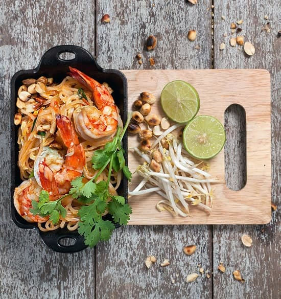

Pad Thai

Description
Pad Thai is a quintessential Thai dish that has gained international popularity for its exquisite flavors and textures.
This iconic stir-fried noodle dish is a harmonious blend of sweet, sour, salty, and spicy flavors, making it a favorite among food enthusiasts worldwide.
Recipe
- Exotic Pad Thai Noodles 1.00 fold
- Exotic Pad Thai Sauce 4.00 tbsp
- Prawns 3.00 pcs
- Beans Sprouts 0.50 pc
- Vegetable Oil 3.00 tbsp
- Garlic chopped 3.00 cloves
- Water 0.25 cup
- Dried Shrimp 3.00 tbsp
- Chives 10.00 pcs
- Pan Rosted Peanut 0.25 cup
- Water for boiling noodles 4.00 cup
PROCEDURE
- Bring your water to a boil in a sauce pan or pot.
- Add your Pad Thai Noodles(rice noodles) to the boiling water
for four minutes, stirring occassionally and strain.
- In a pan add vegetable oil, and add the prawns or shrimps to
the heated pan.
- Add your garlic, to the pan.
- Remove the prawns and set aside, add the strained noodles
back into the pan and add the Exotic Pad Thai Sauce.
- Give it a good stir make sure all the noodles and the sauce
have come together.
- Add your bean sprouts. Remove from heat and add chives.
- Serve the noodles with prawns on top, a lime to squeeze.